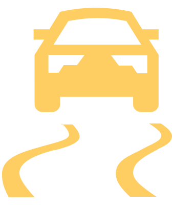

Contrôle de la stabilité (ESC)
L’ESC aide à stabiliser le véhicule dans des situations limites, par exemple, lorsque le véhicule commence à patiner. L’ESC freine les roues individuellement pour maintenir le sens de la marche.

cligne – L'ESC s’enclenche
ESC Sport
ESC Sport permet un style de conduite plus sportif.

s’allume - ESC Sport activée

Contrôle de traction (ASR)
L’ASR aide à stabiliser le véhicule lors de l’accélération ou de la conduite sur des routes à faible adhérence. L’ASR réduit la force motrice exercée sur les roues qui tournent.
cligne – L'ASR s’enclenche
Système antiblocage (ABS)
L’ABS permet de garder le contrôle du véhicule en cas de freinage d’urgence. Une intervention de l’ABS se manifeste par des pulsions dans la pédale de frein.
Contrôle du couple de traînée du moteur (MSR)
Le MSR aide à contrôler le véhicule en cas de décélération brusque, par exemple sur une chaussée glacée. Si les roues de l'essieu moteur se bloquent, MSR augmente la vitesse du moteur. L'effet de freinage du moteur et donc réduit et les roues peuvent à nouveau tourner librement.
Blocage de différentiel électronique (EDS)
L’EDS aide à stabiliser le véhicule lors de la conduite sur des voies avec une adhérence au sol différente sous chaque roue. L’EDS freine une roue qui tourne et transmet sa force motrice à une autre roue motrice.
Blocage de différentiel électronique (XDS+)
XDS+ aide à maintenir le véhicule dans la courbe en freinant efficacement les roues à l’intérieur de la courbe.
Frein multi-collision (MCB)
Le MCB aide à ralentir et à stabiliser le véhicule après avoir heurté un obstacle. Cela réduit le risque de nouvelles collisions.
Conditions de fonctionnement :
Il y a eu une collision frontale, latérale et arrière d'une certaine gravité.
La vitesse du véhicule lors du heurt était supérieure à 10 km/h.
Les freins, l’ESC ainsi que d’autres systèmes nécessaires continuent de fonctionner après le heurt.
N'appuyez pas sur l'accélérateur.
Stabilisateur d’attelage (TSA)
Le TSA aide à stabiliser l’attelage. Lorsque l’attelage commence à tanguer, le TSA le stabilise en ralentissant individuellement les roues du véhicule.
Conditions de fonctionnement :
Le dispositif d'attelage a été livré départ usine ou a été acheté comme accessoire original Škoda.
La remorque est raccordée à la prise de remorquage.
La vitesse de conduite est supérieure à 60 km/h.
Servofrein électromécanique (eBKV)
L’eBKV facilite l’actionnement de la pédale de frein. Simultanément, le freinage régénératif permet de charger la batterie haute tension.
Après avoir coupé le contact, la fonction eBKV est restreinte ou non disponible.

Si le véhicule ralentit à l'aide d'un système d'assistance, des mouvements pulsatoires de la pédale de frein peuvent se produire.
Freinage régénératif
Le freinage régénératif produit de l’énergie qui est stockée dans la batterie haute tension. La force de l’effet de freinage dépend du mode de conduite sélectionné ainsi que de l’état de charge de la batterie haute tension.
Pendant le freinage régénératif, des mouvements de pulsation de la pédale de frein et des ralentissements fluctuants du véhicule peuvent se produire.